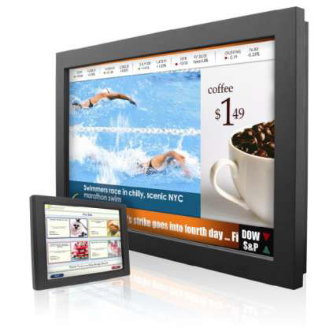
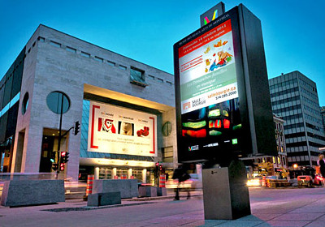
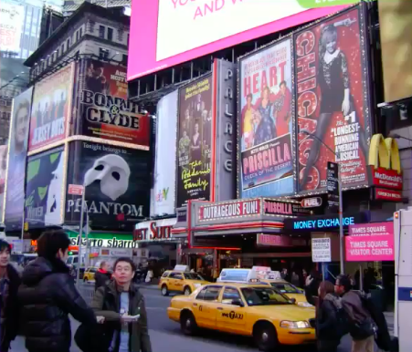
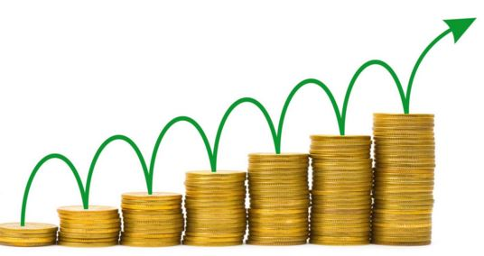

Digital Sginage Software
Что такое Digital Signage?

Digital signage - это электронный способ отображения информации, рекламных объявлений и других сообщений. Изображения отображаются с помощью таких оборудований, как ЖК-телевизоры, светодиодные панели или проекционные экраны, размещенные в общественных и частных кругах, таких как торговые точки, общественные места и частные здания
Области Применения

- Магазины
- Кинотеатры
- Банки
- Спортивные комплексы
- Отели
- В сфере инфраструктуры/ транспорта
- На торговых полках
- В сфере здравоохранения
- В сфере обучения
- Выставки, конференции и ярмарки
Преимущества Digital Signage (Цифровых Вывесок)
Digital Signage (Цифровых Вывесок) Сильно Воздействует
|

|
Динамическая Смена Содержимого
| Содержимое легко изменить. Вместо того, чтобы классическим методом печатать и отправлять новую вывеску, вы можете загрузить через интернет и транслировать в любой момент |

|

- Вам не нужно перепечатывать и переносить объявление при изменении рекламы.
- Вам не придется оплачивать транспортные расходы
- Вы посодействуете окружающей среде
Лучшее использование пространства
| С помощью только одного экрана можно эффективно транслировать сразу несколько визуальных сообщений |  |
Контроль Времени
|

|
Веб-соединение
|

|
Региональное Применение
|

|
Лучший Способ Попадания в Цель
| Вы можете настроить содержимое к месту объявления. Спортивная реклама в спортивном баре, концертные объявления на музыкальной вечеринке и т. д. |

|
Создание Дохода
| Рекламные места на Digital Signage можно продать, чтобы создать другой источник дохода |  |
Особенности XOplayer
| Возможно применение интернет вещей (Internet of Things, IoT). Поддерживает разработку интерактивных приложений в зависимости от окружающей среды и людей вокруг |

|
| Это самая дешевая и инновационная услуга с облачной базой. В 20 раз экономичнее, чем конкуренты |

|
| Вы можете публиковать синхронизированные визуальные и звуковые объявления во время музыкальных трансляций в магазине |
| Не тратьте много времени на загрузку видео. Вы можете загрузить ваши XOplayer видео моментально с Ютуба |

|
Компоненты XOplayer